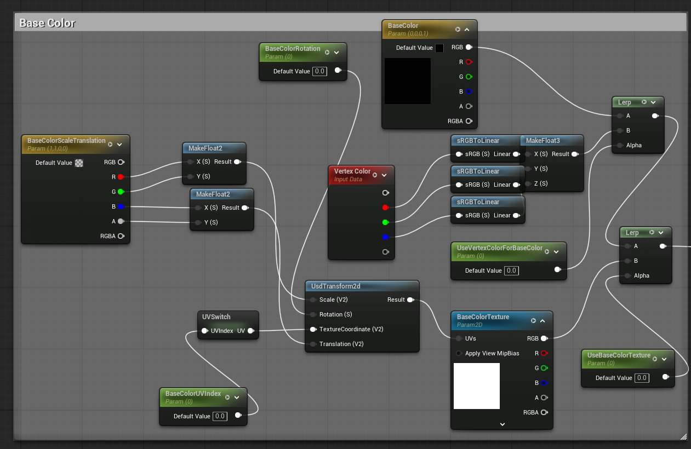
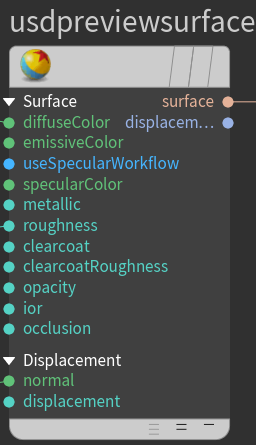
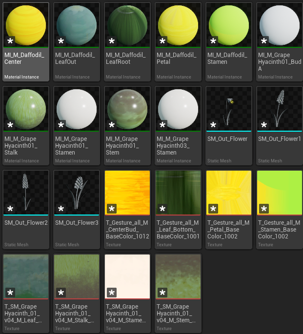

Week4
Week 4 Plan:
-
Test static USD variants in Houdini
-
Test importing a static USD file into Unreal
USD Material (Houdini to Unreal)
Static Mesh
I used this network and MaterialX to export the USD file.


I tried two methods to import a USD file into Unreal. First, I directly dragged the USD file into the Content Drawer, and it generated a folder that included everything inside, as well as a UsdPreviewSurface master material. The result was that the textures in Unreal appeared glitchy. But when I unchecked Nanite, they displayed normally. I also noticed that only Base Color maps were imported — other maps like normal and roughness were missing.





Only Base Color textures are imported
Only Base Color textures are imported

Also, if you just drag the USD file into the Unreal Content Drawer, you will not see the other variants
Second, I tried using the USD Stage Actor to import the USD file. The problem is that I couldn't see any materials assigned here, but they were successfully imported, because I could find the paths of the materials and textures. As for the textures, there was the same problem — only the Base Color texture was imported.


Then, I tried importing only a single daffodil without variants. The result was the same — it still showed a grey model, and only the Base Color texture was imported successfully.
Then, I tried using UsdPreviewSurface to assign the material. This one didn't have SSS, and when I imported it into Unreal, only the Base Color texture was imported again. The model was still grey because the material was not automatically assigned.


When I opened the USD Stage Editor, I could switch between different variants. What I did in Houdini was use Color Correct to adjust the color. Due to some limitations, the color couldn't transfer to Unreal, and only the Base Color texture came through with the mesh. These are all the assets.


Then, I tried a different way to export the static daffodil as a USD file. The result was that none of them had materials assigned automatically, but both the materials and Base Color textures came along with them.

Daffodil Instance in Houdini and Unreal
Then, I tried doing instancing in Houdini to scatter daffodils on the HeightField. I scattered 462 points and copied the animated daffodils onto them.


Daffodil Instance
Height Field

Render in Houdini
When I imported the USD file into Unreal, the materials still didn't show up, and I needed to assign them manually. However, everything else, like layout, layers, and all positions and scales, was accurate.


Render in Unreal
Then, I tried importing the daffodils into a different Unreal project. The materials came along with the meshes, but only the daffodils had materials — the ground still didn't have any. The same issue persisted: only Base Color textures were imported.